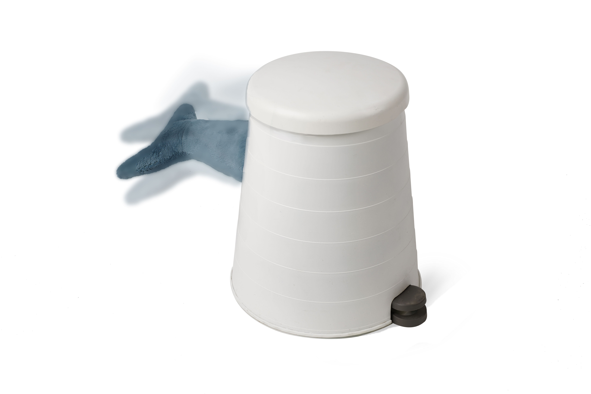
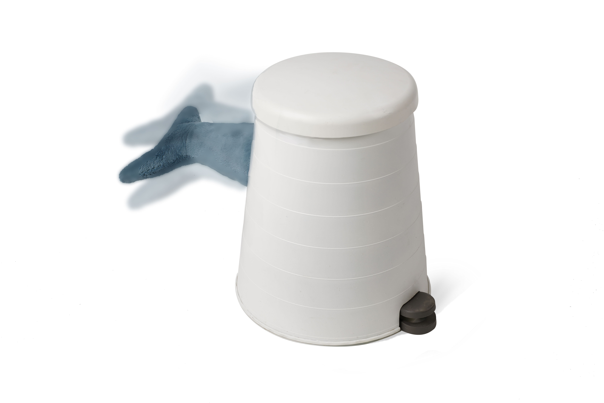

FLAPPY STOOL
 

我认为黑客精神是通过有趣的方式放大生活中的细节和漏洞，从而打破人们的固有认知。鱼尾凳通过宜家垃圾桶踏板和玩具鲨鱼的联动，使生活中抖腿的恼人小习惯放大，转化成鱼尾的动力。同时打破凳子是静态的认知，让它与使用者互动，从而带来惊喜。
I think the hacker spirit is enlarging the details in our lives in a amusing way to break people's stereotype of things. Through the combination of an IKEA rubbish bin pedal and a toy shark, the flappy stool enlarges the annoying little habit of shaking legs by turns it into the tail flapping.It can also break the stereotype that stools are static by allowing users to interact with it in a surprising way.